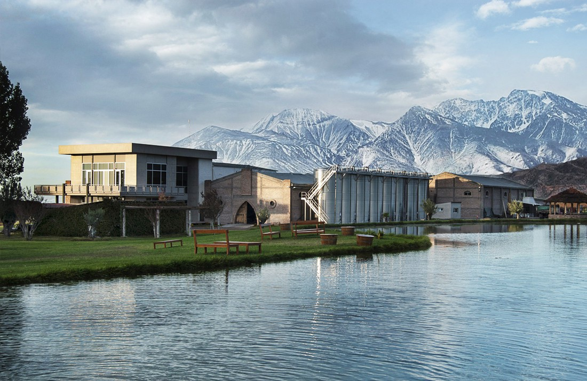

Valle de UCO es una verdadera postal enmarcada entre el Cordón del Plata y el Portillo, con la vista coronada por el Cerro Tupungato, que domina todas las tierras. Esta zona se destaca por la producción de excelentes sidras, jugos, conservas y esencias, obtenidas en establecimientos industriales y bodegas de alta gama. Los Caminos del Vino constituyen una apasionante atracción, en la cual la gastronomía gourmet maridada con vinos consagrados, alojamientos temáticos y emprendimientos artesanales se combinan para ofrecer una receta local para alcanzar la más sabrosa placidez. Entre los eventos del calendario de festividades sobresalen el Festival Nacional de la Tonada que se realiza en el mes de febrero en Tunuyán y la Fiesta de la Tradición de San Carlos en el mes de noviembre.
Aquí comienza tu experiencia, luego del viaje en bus desde la ciudad de mendoza, disfrutarás de una visita y degustación en esta magnífica bodega a cargo de un experto. Una vez finalizada la degustación podrás realizar las compras que desees a un precio exclusivo!
Luego de la primera degustación el Bus parte hace la segunda bodega del paseo. Aquí disfrutarás de un almuerzo de cuatro pasos en la que degustarás un vino a elección (entre tinto y blanco) en cada paso con vista a un imponente paisaje. Los expertos te recomendarán que vino elegir de acuerdo al menu por el que hayas optado dado que la bodega dispone de variantes veganas, vegetarianas y tradicionales.
Luego del almuerzo el bus parte hacia su última parada. En esta maravillosa bodega realizarás un recorrido completo conociendo todos los estadios de producción de la industria vitivinícola finalizando el mismo con una degustación en una de las salas de la bodega. Aqui tambien podras comprar los vinos y/o accesorios a precios exclusivos!
¿Te interesa conocer estas bodegas? Contáctanos y selecciona en el menu desplegable "Valle de Uco"
En caso contrario volvé al inicio para conocer nuestras otras experiencias